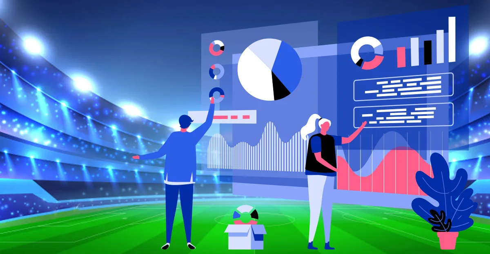
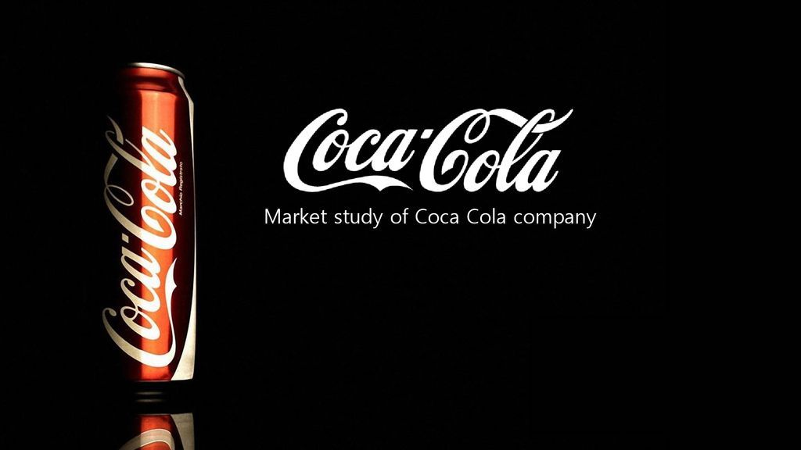

Led a data-driven project to identify and categorize over 200 distinct types of AI tools in 30 categories. Used Tableau to create an interactive
dashboard which is currently used by industry professionals and researcher worldwide to understand the landscape of AI tools available for human interaction.

This project involves the creation and management of a relational database for a watch brand, using SQL. The database design includes creation of tables for storing information and data regarding key entities with appropriate relationships established to minimize redundancy and ensure data consistency. The project also includes the execution of complex queries to retrieve insights from the database while ensuring data integrity and consistency.
This project demonstrates the use of PIL (Python Imaging Library) to develop a Python program that performs image manipulation by selectively modifying pixel values. The program reads two images from the file system, compares their pixel values, and merges them into a new image by replacing pixels in the input image with the corresponding pixels from the reference image. The final merged image is saved as a PNG file, utilizing the PIL package's features for image format conversion and storage.
Led the development of a new scheduling and appointment system for a company that resulted in a 14% increase in sales and improved customer engagement. The project followed an agile methodology and involved a comprehensive analysis of the end-user experience and PESTEL factors to identify business problems. Use Cases, DFDs, ERD, and wireframes were developed using Lucidchart and Figma to establish a clear relationship between customers, employees, and the new system.

The Cricket Predictor project is a data analysis and machine learning project that utilizes various Python libraries such as NumPy, pandas, matplotlib, etc. to predict the outcome of IPL T20 matches and batting/bowling averages. It includes an easy-to-use UI called the Cricket Wizard that allows users to select which predictions they want to see and provides them with the results. The project also provides various statistics and insights into the IPL matches and player performances.

The project conducted a historical equity analysis on Coca-Cola's financial performance in the year 1987 using fundamental and discounted cash flow (DCF) models to evaluate the company's equity. The report provided insights into the company's financial health, future cash flows, and projected valuations. The analysis aimed to provide a comprehensive understanding of Coca-Cola's investment potential and to guide investors in making informed investment decisions.